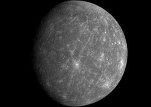
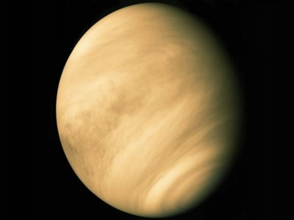
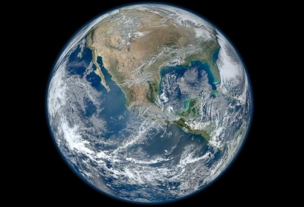

Як найближча до Сонця планета, Меркурій одержує від нього найбільше енергії (в середньому в 7 разів більше, ніж Земля). Через витягнутість орбіти потік цієї енергії впродовж року змінюється в 2,3 рази. За температурою поверхні Меркурій, незважаючи на близькість до Сонця, поступається Венері, але добовий перепад температур на ньому рекордний. Він сягає 650°C: від 467° на екваторі вдень під час проходження перигелію до –183° там само перед світанком[10]. Такий перепад — наслідок великої тривалості дня і ночі та практичної відсутності атмосфери. Але вже на глибині порядку метра значних коливань температури нема, бо теплопровідність подрібнених порід, що вкривають поверхню, дуже мала
Більша частина поверхні Меркурія вкрита застиглою лавою, склад якої близький до базальтового (для новіших вивержень) або до коматіїтового (для давніших). Вона подрібнена метеоритним бомбардуванням до стану реголіту. В цілому поверхня планети схожа на місячну, але з меншим контрастом між темними та світлими регіонами. Вона світліша за місячні моря, але темніша за материки[10]. Заліза, яке спричиняє темне забарвлення Місяця, на поверхні Меркурія значно менше; можливо, його там замінює вуглець кометного проходження. Розрахунки показують, що за мільярди років бомбардування вміст вуглецю в тамтешніх породах має сягнути 3–6 %.

Друга від Сонця планета - Венера. Атмосферу Венери відкрив 1761 pоку М. В. Ломоносов, який спостерігав проходження планети перед диском Сонця. Атмосферний тиск на середньому рівні поверхні Венери перевищує земний у 92 рази, а густина повітря — в 55 разів[5]. Складається атмосфера Венери з вуглекислого газу з домішкою азоту та слідами інших речовин.
Вуглекислий газ та інші складники атмосфери, пропускаючи сонячні промені, дозволяють поверхні нагріватися, але поглинають інфрачервоне випромінювання розігрітої поверхні, що є причиною дуже сильного парникового ефекту. Через це температура на поверхні Венери рекордна для планет Сонячної системи — близько 470 °C. Її добові коливання, а також різниця між екватором та полюсами, дуже малі (близько 1—2 °C). З висотою температура падає на 8°C/км.
Хмарний шар Венери, що ховає від нас її поверхню, розташовано на висоті 49-68 км над поверхнею, за щільністю він нагадує легкий туман і складається в основному з пари 80-процентної сірчаної кислоти. Хмари Венери рухаються зі сходу на захід за панівними на планеті вітрами і роблять повний оберт навколо її осі за 4 дні, а освітленість на поверхні в денний час схожа на земну в похмурий день.

Третя від Сонця планета Сонячної системи, єдина планета, на якій відоме життя, домівка людства. Земля належить до планет земної групи і є найбільшою з цих планет у Сонячній системі. Землю іноді називають світом, латинською назвою Терра або грецькою — Гея.
Земля є об'єктом дослідження значної кількості наук про Землю. Вивчення Землі як небесного тіла належить до царини астрономії, будову і склад Землі вивчає геологія, стан атмосфери — метеорологія, сукупність проявів життя на планеті — біологія. Географія дає опис особливостей рельєфу поверхні планети — океанів, морів, озер та річок, материків та островів, гір та долин, а також людські поселення й суспільні утворення: міста й села, держави, економічні райони тощо.